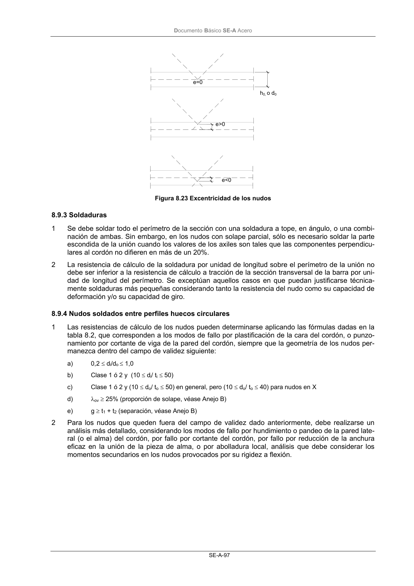

DB-SE-A Acero · edición 2007-10-23 · capa oficial
Documento DB-SE-A-oficial · SHA-256 del PDF 9ed9ea694aabfbda3bfbbef40dfe9223fde05d13c35bc2ba9751e5a96a22a64f
Copia fiel del PDF fuente · Fuente oficial
Ficha de la disposición en la fuente oficial
Formatos: JSON del segmento · Markdown
8.9.4 Nudos soldados entre perfiles huecos circulares 1 Las resistencias de cálculo de los nudos pueden determinarse aplicando las fórmulas dadas en la tabla 8.2, que corresponden a los modos de fallo por plastificación de la cara del cordón, o punzo- namiento por cortante de viga de la pared del cordón, siempre que la geometría de los nudos per- manezca dentro del campo de validez siguiente: a) 0,2 ≤ di/do ≤ 1,0 b) Clase 1 ó 2 y (10 ≤ di/ ti≤ 50) c) Clase 1 ó 2 y (10 ≤ do/ to≤ 50) en general, pero (10 ≤ do/ to≤ 40) para nudos en X d) λov≥ 25% (proporción de solape, véase Anejo B) e) g ≥ t1 + t2 (separación, véase Anejo B) 2 Para los nudos que queden fuera del campo de validez dado anteriormente, debe realizarse un análisis más detallado, considerando los modos de fallo por hundimiento o pandeo de la pared late- ral (o el alma) del cordón, por fallo por cortante del cordón, por fallo por reducción de la anchura eficaz en la unión de la pieza de alma, o por abolladura local, análisis que debe considerar los momentos secundarios en los nudos provocados por su rigidez a flexión. e=0 e>0 e<0 h0, o d0 DocumentoBásico SE-A Acero SE-A-98 Tabla 8.2 Resistencias de cálculo de nudos soldados entre perfiles huecos circulares Tipo de nudo Resistencia de cálculo Nudos en T o Y Plastificación del cordón
